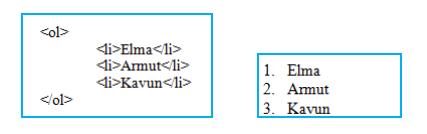
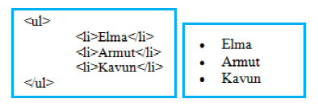

HTML NEDİR?
1. HTML (HYPER TEXT MARKUP
LANGUAGE) TEMEL ETİKETLERİ
1.1. HTML Komut Yapısı
Html (Hypertext Markup Language), web sayfaları hazırlamak için kullanılan bir
dildir. Html komutları herhangi bir metin (text) düzenleme editöründe yazılabileceği gibi,
çeşitli web tasarımı editörlerini kullanarak da oluşturulabilir.
1.1.1.< HTML >
< html > etiketi, html kodlarının yazımına başladığımızı gösteren etikettir. Tüm html
kodları < html >…< /html > arasında yer alır. < /html > ile html kodlarının yazımının bittiği
anlaşılır. Bu etiketin hiçbir parametresi yoktur.
1.1.2.< HEAD >
Hazırlayacağımız sayfa ile ilgili bilgilerin bulunduğu sayfa başlığı (title), link
özellikleri, siteyi tarayıcıya ve arama motorlarına tanıtmak amacıyla kullanılan Meta
etiketleri bölümdür.
1.1.3.< BODY >
Html belgesinin tüm içeriğinin yer aldığı bölümdür. Bu bölümde yer alan içeriğin
tümü tarayıcıda görüntülenir. Body etiketi ile birlikte kullanılabilecek parametreler ve
görevleri aşağıda gösterilmiştir.
Bgcolor: Hazırlamış olduğunuz web sayfasının arka plân rengini belirlemek
için kullanılır.
Kullanımı;
< body bgcolor=”blue” >…< /body >
Background: Hazırlamış olduğunuz web sayfasının zemininin bir resimden
oluşmasını isteyebilirsiniz. Bu parametre arka plânda kullanılmak istenilen resmi
belirlemek için kullanılır.
Kullanımı;
< body background=”resim.jpg” >….< /body >
1.1.4.< TİTLE >
Sayfanın tarayıcıdaki başlığının ne olacağını belirlemek için kullanılır. Title etiketleri
< Head >….< /Head > etiketleri arasında yer alır.
Kullanımı;
< title > görüntülenmesini istediğiniz başlık < /title >
1.2.Listeleme Etiketleri
1.2.1.< OL >
Sıralı liste oluşturmak için kullanılır. Kelime işlemci programındaki numaralandırma
işlemi ile aynıdır. Listeleme işlemi harf, rakam veya roma rakamı şeklinde yapılabilir.
Belirteceğiniz parametreler yardımı ile de istediğiniz harf, rakam veya roma rakamından
başlayarak sıralı listenizi oluşturabilirsiniz.
< ol > etiketi, < li > etiketi ile birlikte kullanılmalıdır.
Burada < ol > etiketini kullanarak listeleme işlemine başlıyoruz. < li > etiketini
kullanarak da listeleyeceğimiz elemanların isimlerini yazıyoruz.

1.2.2.< UL >
< ul > etiketi madde işaretleri şeklinde listeleme yapmak için kullanılır.

1.2.3.< IL >
Liste oluşturmak için liste elemanlarını belirtmede kullanılan etikettir. Sıralamanın hangi şekilde olacağını ise < ol > ve < ul > etiketleri belirler.
|